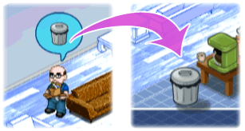
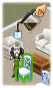
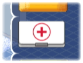

15 |
Build Phase Items |
 |
Trash
When a worker is finished building a piece of furniture they will be left holding a Trash Bag.

Re-Energize Workers: As the workers build they gradually get tired and eventually will take long breaks if you don't tend to them. To keep the workers energy level up, you must get them coffee. Point the Wii Remote at the coffee pot and hold down  to pick up the coffee pot. to pick up the coffee pot.Move the coffee over to the worker and release to pour them a cup.The worker will then become re-energized. First Aid Kit  If a worker becomes injured on the job they will need to be bandaged up. If a worker becomes injured on the job they will need to be bandaged up.To do this, you must grab the First Aid Kit from the right side of the screen and drag it to the worker. To help them bandage quicker point the Wii Remote at the injured worker, hold down  , and mimic the motion indicated in the toolbox. , and mimic the motion indicated in the toolbox. |
 |
 |
 |